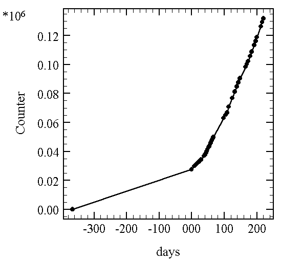

毒と笑いととつげき東北
〜〜過去の日記〜〜
６）00/03/02〜01/05/03分
５）00/02/06〜01/03/01分
４）00/12/30〜01/02/05分
３）00/12/22〜00/12/29分
２）00/12/14〜00/12/21分
１）00/11/24〜00/12/13分
01/06/12
業務連絡
携帯新しいの買ったよん
番号は前と同じです
こっちから相手の番号がわからんので、今までおれの番号入ってた人は、電話ちょうだいねー
01/06/07
･･･なんでそこにあんねん
今日ひさびさにオフロ掃除をした。
普段はものぐさで掃除などしないので、かなり気合いを入れて掃除してみた。
う〜ん、たまにはいいもんやね。
そして労働の後のめしはうまい。
めしを食い、ふと電話しようとした時。
「おや？ おれの胸ポケットに入れてた携帯どこいった？」
携帯がなくなってしまった。
おかしいな、おれの部屋は散らかっているので、けっこう部屋の中でなくなりやすい(笑)。
そこで家の電話から電話をかけてコールして見つけようと思い立ったが、音が鳴らない。
う〜ん、おかしい、音切ったままかな、ひょっとしてワニの家に忘れた・・・？
まあいい、とりあえずキレイに洗ったオフロに入ってゆっくりしようか。携帯は後で探そう。
「Σ（￣□￣；）」
「・・・浴槽の中にあるよこれ。携帯オフロ入っとるで！！ ･･･あったかそうや」
どうやら、掃除してる時に落として気付かなかったもよう・・・。
つっこんでいるヒマがあったら少しでも早く湯船から救い出すべきだった(
ノД`)
取りあえず拾って乾かして、電源を入れたが・・・
画面が、かつて見たこともないような光を放っている(
´Дﾟ)ﾁｮｯﾄｷﾚｲ･･･
大衆ポイントが40上がったわ(笑)
むろん、全てのメモリーは消え、というかボタンが効かなくなった。
おれに携帯の番号を教えた全ての人、またおれの携帯の番号を知っている全ての人、おれはもう君の番号がわからないし君はおれに電話できません(
´Д`)
新しいの買うので、必要な方は携帯番号メールちょうだいね('ρ`)
01/06/06
補足
できすぎくん鍵（計10本）争奪！ 170000ＨＩＴ数予想懸賞！
ええと、予想は「〜〜日〜〜時」という形でお願いします。
ＨＮを明記して下さい。
それと、6/11の〆切以降に、上級掲示板の方に、もう一度予測した日時を書き込んで下さい！（専用スレを作ります。ここではＨＮは匿名でかまいません）
上級掲示板のそのスレッドに書かれたもののみを当選の対象にします。
確認。
予測する
↓
totutohoku@hotmail.com
に、170000ＨＩＴ予想日時、および、ＨＮを３つまで明記して送る。
↓
6/11〜6/16までの間に、とつＨＰの上級掲示板の専用スレッドに、予測した日時を書き込む。
↓
結果発表を待つ
この流れです。
２重予測や、予測の形式の間違いや、上記の方法に沿わないものは対象外とします。
なお、既に予測メールを送った方で、上記に違反している方は、速やかに「訂正」メールを送ってください。
今後は訂正メール等は受け付けませんので慎重にお願いします。
01/06/05
一部改定 今後も要項改訂する可能性があるので注意
できすぎくん鍵（計10本）争奪！ 170000ＨＩＴ数予想懸賞！ ヾ(ﾟ¬ﾟ)ゞ (*ﾟｰﾟ)シ｡･:*:･
下の図は、とつげき東北ＨＰの、日にちの経過とＨＩＴ数の推移を示す。

設置して１年間で約25000ＨＩＴだったが、その後急激に伸びた。
経過日数 １日あたりＨＩＴ数
0〜365 75.3
365〜414 280.8
414〜464 433.4
464〜514 548.4
514〜566 545.9
566〜586 648.8
6/5 １４：２４現在 131723ＨＩＴです。
この資料を基に（？）、カウンタが170000になる日付と時刻（〜〜時〜〜分まで）を当てて下さい。
totutohoku@hotmail.com
こちらに、応募する人の東風でのＨＮを明記して応募して下さい（同一ＨＮでの複数投稿はルール違反で無効になります）。
一番近かった人にはできすぎくんの鍵を３本差し上げます（当選者のＨＮが３つ以下の場合、余った分は他の応募者に振り分けします）。
またその近辺の予測者たちを含め、合計10本の鍵を用意します（結果に応じてこの10本を「適当に」振り分けます。３本以外は有効期限付きになる予定）。
応募〆切は6/10日付けメール（必着）とします。
なお、カウンタが170000になる時間をおれ自身が正確に把握できない可能性がありますので、そういう場合は、おれが確認したカウンタから適当に割り出します（16950と1７100を確認した場合、その間のＨＩＴ数が時間に関わらず一定であるとして、170000ＨＩＴを逆算します）。あらかじめご了承下さい。「証拠画像」などを張られても時間が証明できないので、無効です。こういうルールだと割り切って応募してください。
ん？ ＨＩＴ数を伸ばすための策？ できすぎくんが売れないから浸透させるための策？
なんとでも言えや(ﾉToT)ﾉ ┫:･'.::･┻┻:･'.::･(笑)
ポイントは「金・土の夜」のＨＩＴ数の伸び、発表直前のＨＩＴ数の伸び（リロードによる「合わせ」含む）をどう読むか、かな・・・
01/05/30
あらゆる東風団体の未来予想
団体ＨＰのヒット数 状況
0〜3000 知り合いに声かける。待合い系知り合いが多いため「開設おめでとう」系のカキコでカウンタアップ
〜5000 大会やら交流やらで何かとカウンタを稼ぐ。団体対抗戦などに積極的に参加するのもこのころ。
〜8000 勢いがある振興の団体だけあり、新メンバーもどんどん増える。
〜13000 獲得しすぎた団員が多すぎ、幽霊団員が目立つようになる。団員紹介のＲなども更新が遅れる。
〜17000 最初の勢いがなくなり、主要な６〜７人程度の団員とその知り合い以外のカキコがなくなる。
〜20000 団体メンバーは焦りを感じ宣伝。「団員になります！」との新規メンバーが現れる。
〜22000 が結局、既に仲の良い団員に溶け込めず、新メンバーはいまいちの存在に。徐々に離れる。
〜24000 環境が変化し、旧メンバーのカキコも減る。全体が老化したようになる。
〜26000 掲示板へのカキコが週に２〜３個、レスもない。
Σ(´ﾛ｀；) not found ページが見つかりません ＵＲＬを確かめてください
01/05/29
少しばかりの智恵
100個の物質が机の上に「静止して」いた。
そこに、１個の物質が「近づいて」きた。
ぶつかってはじけた。
100個の物質が同じ速度で「進んで」いた。
途中には、１個のボールが「静止して」置いてあった。
ぶつかってはじけた。
いずれの場合も、各々の物質から見て、運動は相対的である。
「本質的に、どちらがどちらにぶつかったのか」「静止していたのはどちらか」という問いは物理学的にナンセンスである。
各々から見て自分は静止していたのであり、相手がぶつかってきたのだ。
「静止していること」そのものが、「運動しているもの」から見て障害なのだ。
「しかし、やはり静止していたのは我々であり、ぶつかってきたのは相手だった・・・周りの99個の物質もそう言っている」
炭素の大部分はダイヤモンドを構成しないものだ。
01/05/28
「思想」
何か物事に対して、どう考えるかの、比較的まとまったものを「思想」という。「考え」の集合体だ。
思想に関する誤解を解いておく。
１）思想を持っていることは立派なことではない
２）他人の思想を認めたり他人の思想を知ったりすることは立派なことではない
３）したがって、思想は知的なゲーム以外のものではない（高揚感が思想の本質である）
１）思想を持っていることは立派なことではない
ある人がある考えを持っている。
たいていの場合、それはおれ言うところの「凡庸な」ものだろう（時には、そんなものは思想ではない、と煽るかもしれない）。
おれは独自の（おれ固有の、という意味ではなく、おれが自分で考えて辿り着いた、という意味で）思想を持っている。
おれが自分の考えを、かなり根本的な部分からロジカルに構築するためには２年間くらい「色々な本を読み、自分で様々な対象について考える」ことを必要とした（楽勝100冊以上読んだぞ 笑）。
それは何だったのか？ 当然、凡庸な言い方をするところの「自己満足」である。
思想が現実的な意味合いで役に立つことはあまりない。
変な、排他的な思想を持つと（例えば「善悪」によって他者を嫌ったりするタイプ）、むしろ邪魔になるほどだ。
おれの場合はこうして日記や黒とつにすることで、割と多くの人が影響を受けて楽しめたし（信奉者も多くいて「教祖」とのそしりを受けることもあるが 笑）、自分で今の自分の「さっぱりした」部分が気に入ってはいるが、それはあまり「現実の役に」たたないものだ。
「思想なんてどうでも良いから、うまく生きろよ」というのがおれの思想の出す結論だ。
ただしこれは根本的な意味合いにおいてだ。
何度も言ったので詳しくは言わないが、「善悪」「かくあるべし」などで他者との関係をぎくしゃくさせるようなのはダメね。ドヘタ。
思想を相対化し、思想の呪縛から真に自由になるということが、思想を勉強して得られた唯一の「メリット」だったと思う。
（これがなかなか難しいらしい。どうしても「かくあるべし」を相対化できない。全ての状況を楽しめない。何か物事に腹を立てる。おれの影響を中途半端に受けた人が一番あぶないかも 爆）
２）他人の思想を認めたり他人の思想を知ったりすることは立派なことではない
よくあるのが「これは自分の考えであり、押し付ける気はない」などのセリフだが、下の日記に書いた通り、こういうのはださい。「〜〜は多重だと自分は思う、これは自分の考えだ」という発言をして、書かれた本人は「押し付けじゃないからいいや」と思うはずはない。書くことそのものがある種の権力行使であり、押し付けであり、迷惑なのだ（それを了解し反発を受ける覚悟をもって発言すべきだ）。
同様に、ある事柄に対して「自分はこう思う」と述べること自体が、既に形式の圧迫であり、他人の思想への侵略なのだ。「自分があることを考えるのは自分の自由だ」などというのは本質的に思い上がりに他ならない。その自由は力を持って獲得すべき何かである（ビルゲイツは傲慢な発言をする力を持つ、反ビルゲイツ派がその「人間性」を攻撃することしかできない程度に）。
反発や反撃に対し耐え得るだけの力なくして自分の思想を持っても、結局「そういう考えもあるね」「君がそう思うのは君の自由だけど、おれは君と違って押し付けたりしない」などの逃げに走るのが精一杯だ。
他人との議論を避け、ぶつかりあいから逃げ、小さく小さく守り続ける程度のものは「思想」なんかではない。ただの信念だし、そんな信念をＨＰに書いてしまうようなことは心からかっこわるいことだ。とりわけ、それが「みんな言っている凡庸なこと」だとしたら、たいそうつまらないことだ。
「
君の考えで、唯一おれの考えに「勝っている」点は「押し付けないこと（換言すれば、「人間性」）」だけか？(笑) うわださ(笑)。
むろん、「押し付け」の何たるかについておれと議論しても、君が勝つことはあり得ないがね。
要するに君の「考え」は、何の深さもなく、何の根拠もなく、何の説得力も持たず、単にそれを信じることが君にとって好都合であっただけの、よくある凡庸な決めセリフの寄せ集めでしかない。
つまり君は「みんなが言っていることを言い直している」だけに過ぎない。
」
他人との議論によっても決して負けないほど考え抜かれた思想を語りたい。
３）したがって、思想は知的なゲーム以外のものではない（高揚感が思想の本質である）
思想オタクになってくるとあぶない。
例えばおれはカントは「純粋理性批判」をさらっと流し読みし（うわ、哲学畑の人から怒られそう(
´ｰ`)）、「実践理性批判」「道徳形而上学原論」を読んだくらいだが、「カントについてここの解釈が違う」とか言われても大変困る。別におれはカントの思想が「正しい」などとは全く思わないし、「現実に役立つ」とも思わない。「正しくなく、役にも立たないもの」についての知識を深めようとは思わない。
思想を持つことはゲームなのだ。
思想に寄りかかってしまう人は思想の何たるかが全くわかっていない。
自分の「考え」がある。それは弄ばれるものであり、楽しまれるものであり、「現実に役立つ」ものであったり信念として貫かれるようなものではない。
何も考えず、ただただダラダラと遊び暮らすのは素晴らしいことだ。
知的好奇心が高い人間はそれで満足できないから、「思想」を持つ。
しかし思想に寄りかかり、思想を持たない人を心底から（ポーズではなく）軽蔑するのはルサンチマンそのものだ。
ゲームとして思想を振りかざし、遊べるような境地に達することが、思想を知るということである。
思想をゲームとして持つということが何を意味するか？
思想に寄りかからないとはどういうことか？
「自分の考え」を、閉じたものとして持たないことだ。
「自分はこう考える、押し付ける気はない」という発言は、自分の思想への寄りかかりの表明であり、「自分の思想が好きだ」に他ならない。
そうではない。
敢えて自分と違う考えに、自分の考えをぶつけて行く。
「ワイ卓は無価値だよ！」という侵犯をする。
その上での反撃を楽しみ、かつ、反撃を打ち破ることだ。
それが思想ゲームの楽しみ方であって、そして、そうでない「思想」などはとっとと捨て去るべし。
自分の思想の虜になっている様子は滑稽なものだ。
「他人の価値観、思想も認めよ」という発想を心から信じている人は、思想について何ら理解していない人であり、自分の思想に寄りかかるタイプの人であり、つまり、他人の価値観や思想を全く認めることのできない人である。
（そうなってしまう原因？ 思想を勉強していないか、とんでもないキャベツ頭だったかのいずれかだ。つまりそうした人物は思想について語る「資格がない」。くそして寝ろ 笑）
追伸：善悪のニオイのする「思想」を持つ人は全て、思想を勉強していないかキャベツ頭かのどちらかなので相手にしなくて良し。相手の思想を「自分勝手だから」とか「都合が良いから」とか、あるいは「他人の意見を認めていないから」とかひどい場合「えらそうだから」などを根拠に＝「悪だ」ということを根拠に、否定するような非論理的な人間の思想は全てうんこである。思想ゲームはロジックなしでは成立しない。そして、善悪ぬきでまともにロジカルな会話ができる人間というのは、世の中の20人に１人もいないわけだ。
01/05/27
プログラムについて
「プログラムを作る」ということは、おおざっぱに言えば、「ある情報を変数に入れて、それを処理して出力する」ようなシステムを作るということだ。例えば、ファイルから数字を読み込んで足しあわせてその結果を表示しようとしたら、次のようなプログラムを書くわけだ。
ｉｎｔ ｘ
ｉｎｔ ｙ （プログラムに使う変数ｘ、ｙ、ｚを宣言する）
ｉｎｔ ｚ
ｘ ← ファイルの数字 （変数にファイルのデータを読みとり）
ｙ ← ファイルの数字
ｚ ← ｘ＋ｙ （結果の変数に、他の変数を加えたものを代入し）
ｚ → 画面に表示 （画面に表示する）
ここで変数は、自分で勝手に好きな名前を決めて宣言することができる。１文字でなくても良い。
普通、ｘやｙといった名前ではなく、もう少しわかりやすい名前にする。
例えば上のようなプログラムなら
ｉｎｔ ｄａｔａ１ （ファイルのデータ処理用の変数名は ｄａｔａ１ ｄａｔａ２）
ｉｎｔ ｄａｔａ２
ｉｎｔ ｒｅｓｕｌｔ （結果の変数名は ｒｅｓｕｌｔ）
のようにする。こういう変数宣言があるとかっこいい。
ところで、できすぎくんの変数宣言はどうだろうか。
ｉｎｔ ＲＩＩＣＨＩＧＯＨＯＵＪＵＵＩＰＰＡＴＵＲＩＴＵ
かっこよくねえええええええええ
超和名やないか！
リーチ後に一発で放銃した率、確かにそれはわかる。
しかし、もう少し格好良い変数名があるやろ(ﾉToT)ﾉ
┫:･'.::･┻┻:･'.::･
他にも
ＲＩＩＣＨＩＯＫＫＡＫＥＲＡＲＥＲＩＴＵ
R_SAIKOUKIROKU
等。
わかりやすい。わかりやすいよとつ君・・・思わず赤面するほど。
R_SAIKOUKIROKUって(爆) せめて R_max とかそれぐらいにしとけや(
≧∇≦)ﾌﾞﾊﾊﾊ!
そのうち
ri-chi daro
なんて変数も出てくるかもね（謎）
01/05/26
ＰＣ不調
ＰＣが壊れた、と漠然と言うとオッサンみたいなので、状況を説明する。
ネットに接続ができなくなった。この日から掲示板にレスをしていないのはそのためだ。
正確には、ネットに接続できるのだが、ＩＲＣを利用したりwebサイトに移動したりメールを読んだりすることができない。
え？ ネットの機能全部じゃんって？
甘い。
なぜか東風荘にだけは接続できるのだ(爆)。 （本当）
さすがおれ( ≧∇≦)ﾌﾞﾊﾊﾊ!
このままだとＰＣが「東風荘用ハコ」になってしまう( ´Д`)それだけは避けねば･･･いやそれも良いが。
とりあえずしばらくは東風荘中心の生活ということで(笑)。
01/05/20
今日のひとこと〜できすぎくんについて。
絶対に最大化しないでください。
ださすぎるから( ≧∇≦)ﾌﾞﾊﾊﾊ!
01/05/18
なぜ他人の意見を認めるべきでないのか
おれは前に日記で、「ワイ卓は無価値」だと断定した。
あれを書いた時には、どっかのバカが必死でおれに
「確かに超ランは価値があるだろうが、ワイ卓を無価値と決めつけるのは良くない」とか
「楽しみ方には色々あるのだから、押し付けるな！」とか言ってくることを期待していた。
それを叩いて遊ぼうと思ってたのね。
だが、実際には身内から反発を喰らってしまい、あんま叩くわけにもいかず放置となった(笑)。
結局「とつは、単にワイ卓が無価値だと断定しただけ」ということで終了になった(
´ｰ`)
とてもよく目にする凡言（＝浅はかな決めゼリフ）の一つに「押し付けるな」だの「お互いの迷惑」だの「嫌なら見なければいい」だのといったものがある。
一般に、ある主張を「よく目にする」ことは、決してロジックとしての信頼度が高いことを意味せず、「それが彼らに都合がよい」ことだけを意味する。
マンガを読んで批判を書くとする。「嫌なら見るな！」と怒り出すファンがいる。
「嫌なら、おれの書いた批判文を見るな」。
全く同じ立場にいるにも関わらず、単に「好きなマンガを批判されたくない」からといって、都合の良い解釈で決めゼリフを言ってしまう。
「ワイ卓は無価値！」と言うと、「決めつけはよくない」と言われる。
決めつけじゃない主張って何だよ？(笑)
どんなにおれがデータや根拠を明確にして話しても「絶対という保証はない」から「決めつけは良くない！」と言うくせに(笑)。
そこまで行くと「決めつけは良くない」なんて思い込み自体が決めつけだろうが。
全ての発言は決めつけにしか過ぎない。絶対の保証などどこにもない。
そんなことは当然高校生くらいの段階で気付くべきことだし、そういうことがわかっていれば今さら「決めつけは良くない」などと自信満々に発言したりしないものだ（かっこわるいからね）。
残るのは、いかにデータを揃えて信頼を得るか、普段出している「結果」から信憑性を高めるかの問題だけだ。
（もちろん、「ワイ卓は無価値」など、おれを含めて誰も信じない。煽りに決まってるだろ。そんなこともわからずマジメに反論してしまった時点で何一つわかっていない）
「君がそう思うのは勝手だが、押し付けるな」もひどい。
もし押し付けが良くないと仮定するなら、こんな無根拠な凡言こそ、信じるのは勝手だが他人に押し付けてはならない。
（が、彼らは「押し付けるな！」という押し付けをもって、自分の安楽だけを確保したがるし、その都合の良さに屈してその凡言を信じてしまう）
「自分の意見を持つのは良いが、他人の意見も認めるべき」だって？
じゃあ他人が「他人の意見などどうでも良い」という意見を持っていたらどうするの？ ねえ。
君は自分の意見を持っても良いけど、そういう他人の意見は認めないの？
なーんや、それ、言葉違うやん。
君の言いたいのは「自分の意見を持つのは良いが、おれの意見には反対するな」でしょ。
押し付け合わないこと、迷惑をかけ合わないこと、決めつけ合わないことなど不可能だろ。
「押し付けるな、迷惑をかけるな、決めつけるな」それ自体が、他ならぬ「押し付け」であり「迷惑」であり「決めつけ」なんだよ（もっとも、こうしたことは彼らにとってあまりにも不都合だからという理由だけで、このことを認めない連中はたくさんいるだろうが・・・君たち、死ね）。
全ての行為や意見や存在は押し付けであり、迷惑であり、決めつけであり、それらは「嫌なら見ない」ですむような何か、「他人がどう思おうといいけど自分は自分の好きなようにやる」ような何かではなく、常に自分に降りかかり、執拗にからみつき、振り払わねばならないような何かなのだ。世界はそんなに「君にとってだけ都合良く」できているものではないのだ。
こうした基本的な認識ができている人は「善人」にならない。
自分が（そして誰もが）善たりえないことをよく心得ていて、したがって遊び心に満ちている。
わざと押し付ける、わざと決めつける。善人の聖域を犯してみる。
怒り狂った善人が反対してくる様子、善人の化けの皮が剥がれ、押し付け返し、決めつけ返し、なお自分だけが善であると信ずる狂信的な様子を見て笑うことができる。
だからおれはもう一度断言する。
「ワイ卓？ データの取れない麻雀には何の価値もないよ」
01/05/17
FAQって何の略？
ＦＡＱとは、Frequently
Asked Questions （よく聞かれる質問）の略らしい。
おれはずっと
Frequent Asked 〜〜だと思ってた。
あぶないあぶない（；´ｰ`）y-ﾟﾟ
01/05/16
相手の気持ちを考えなさい（ただし明晰な頭脳で）
「相手の気持ちを考えて」？
「考える」などという言葉を使えるほど考えているか？ あるいは考えるための資質を備えているか？
考えるのは勝手だが、他人の感情を推察し、把握し、予測する能力が平均人には欠けている。
おれはマジメな会話の最中なら、ある程度以下の水準の相手が次にどういう発言をするかかなり正確にわかる(笑)。
おれは自分にとって必要な人に対しては優しい。
相手がどういうことを言われればむかつくか、つらいか、逆にどう接すれば気分良くなるかを明確に形式化しつかんでいるからだ。おれは善人になろうと思わないが、少なくともバカは善人になれない。
そして、敵を作るのがうまいだろ？(笑)
何を言われると凡庸な無能がむかつき、どうすれば善人やバカが怒り出すかを知っているからだ。
おれに「相手の気持ちを考えろ！」というのは的はずれもいいとこ。考えた末に、相手が最も嫌がることを言っているのだから。少しはお前も「考えろ」。
「相手の気持ちを考えろ」に対して──「相手の気持ちを考える能力をつけろ」。
01/05/15
ログ
チャット自体はたいして面白くないけど、相手があの広末なら(笑)
東風掲示板で多重だと言われたのがショックだったのだろうか？
多重しておいて（※）多重してると言われたら逆恨みして「コンビ」だのと中傷するとは(笑)
※東風戦四人 クイタン無し 流局連荘 Rate変動有り
とつげき東北>∃□ =ﾉ 勹_〆(･･o)
風♪あじーる>(´∇｀)ノよろ
月組☆まゆ>よろしく
坊や広末貴志>チィ コンビ打ちの玄人 相手か・・・
とつげき東北>ドラ３ちゃうんかい・・
風♪あじーる>ちゃうんよ
とつげき東北>いやートイメン
坊や広末貴志>さすがコンビ打ちの夫婦だ 通しで南がでてこねー
風♪あじーる>コンビなのか？
とつげき東北>超無スジ切ってたから当然ドラ３かと(笑)
坊や広末貴志>そうだ
風♪あじーる>ほほう
とつげき東北>多重野郎の妬みですよ 超ランの常連に聞いてみなさい
坊や広末貴志>それにしてもつえーな 最強の夫婦相手に
風♪あじーる>多重なのか？
坊や広末貴志>楽勝かよ？
とつげき東北>広末多重ね 誰でも知ってる
坊や広末貴志>http://www15.u-page.so-net.ne.jp/bk9/ryo-ko/坊や広末公式ＨＰヨロ
風♪あじーる>多重か。。。
坊や広末貴志>全成績掲載
坊や広末貴志>残念ながらね
坊や広末貴志>(広末涼子_ _)ﾉ彡☆ｷﾞｬﾊﾊ!!ﾊﾞﾝﾊﾞﾝ!!
とつげき東北>最近多重やめたらしいが 観戦とか怪しい
坊や広末貴志>(広末涼子_ _)ﾉ彡☆ｷﾞｬﾊﾊ!!ﾊﾞﾝﾊﾞﾝ!!
坊や広末貴志>http://www15.u-page.so-net.ne.jp/bk9/ryo-ko/坊や広末公式ＨＰヨロ
とつげき東北>一人で喜んでなさい 超ラン常連はみんな知ってる
とつげき東北>２ちゃんでも多重現場の牌譜アップされてたね
坊や広末貴志>お前 いつから常連になったの？？
風♪あじーる>おぼえとこ
坊や広末貴志>試合数見て話せ コンビ打ち 夫婦
風♪あじーる>そ〜いや 漫画のってたね＞とつ
とつげき東北>あ 見た？(笑)
坊や広末貴志>レス無し にげ おめ
風♪あじーる>みたみた
とつげき東北>また今度出るよー
風♪あじーる>ほほう
風♪あじーる>また拝見するよ
とつげき東北>うんうん よろしくー
風♪あじーる>うらやましかった
とつげき東北>( ´ｰ`)ﾌﾌ
風♪あじーる>マジでデータあつめてんの？
とつげき東北>うんうん ＨＰみてね
とつげき東北>/hp/
風♪あじーる>らじゃ
... ダンス☆真 蛸 四暗十三面侍 あゆ☆代表 蛻
... 鬼殺し/鬼式 ＰＯＷＥＲ takeping 緑猫 タイラー
坊や広末貴志>まゆ とのＳＥＸ写真でも掲載中っすか？
とつげき東北>子供だ
とつげき東北>うう・・つよっ
坊や広末貴志>いいねー 妻が必死に絞って 鳴かせなかったら
坊や広末貴志>あがられてやんの っぷ
風♪あじーる>まぐれ〜♪
とつげき東北>広末かっこわるいぞ(笑)
坊や広末貴志>ふーん 試合数(一万未満)の常連さん＾＾
とつげき東北>？
とつげき東北>おれがいつ自分が常連と言った？ 常連に聞けとは言ったが。
とつげき東北>などと本気でつっこんだらかわいそうだからやめよう
坊や広末貴志>いや 別に ノーモアドヘタさん ＾＾ っぷ
とつげき東北>っぷ じゃないよ君(笑) っぷ で全て流そうとするなよ(笑)
とつげき東北>君の最高の攻撃が ﾌﾟﾌﾟ とかその程度なのはわかるがね・・
坊や広末貴志>なにかなぁー 、もしかして まゆ の事に話題振ると
坊や広末貴志>怒っちゃうのかな かわいいね 君
とつげき東北>ふーん
坊や広末貴志>おいおい 勢い無いよ
とつげき東北>６本場・・
とつげき東北>おれ 喧嘩屋 ちゃうもんなあ(笑)
坊や広末貴志>可愛いね＾＾ まゆの事に頭 たこのように真っ赤になって怒って
とつげき東北>喧嘩屋だ・・
とつげき東北>おれ議論はできるが喧嘩はあまり・・
とつげき東北>おもしろくないもん
坊や広末貴志>ふーん もやし君なんだ
とつげき東北>うんうん そうだよ(笑)
とつげき東北>強すぎだが( ´Д`)
風♪あじーる>ふふふ
とつげき東北>次回は勝つ！！ ←今回は逃げる(笑)
風♪あじーる>あはは
とつげき東北>ぐああああああ ちょーーーーつえええええええ
風♪あじーる>ふふのふ
とつげき東北>東１やのに(ﾉ_･､)
とつげき東北>ﾋｰ
とつげき東北>このままいっそ全員とばして･･
坊や広末貴志>ウルセーよカス 全員じゃねーだろ てめーら腐れ夫婦だけだろ ←こういう感覚がわからん 涙
とつげき東北>はい喧嘩屋発見
とつげき東北>かっこいいね喧嘩屋・・ナリタイワー
坊や広末貴志>そうだね＾＾腐れ夫婦よりマシだもんね＾＾
とつげき東北>はいはい(笑)
風♪あじーる>う〜ん 夫婦なの？ まじで
とつげき東北>恋人ですが(笑) コンビじゃないよー(笑)
風♪あじーる>恋人か いいな
とつげき東北>一応おれの牌譜はＨＰで公開してますので･･中傷絶えないもんで
笑
坊や広末貴志>誰もんなこたぁ聞いてねーよ
とつげき東北>↑
坊や広末貴志>かっこつけてるの 妻の前で
とつげき東北>あ 失礼
とつげき東北>妻ネタの次が見たいのですが。。
坊や広末貴志>かっこええなー ド田舎の東北大やなんて 横国じゃ勝てないわ ←アピールアピール♪
とつげき東北>誰も聞いてないよ２
坊や広末貴志>実力もねーで口だけだな
とつげき東北>げ １回勝負とはいえ元多重に負けるのは嫌なもんだな･･
坊や広末貴志>通算でも勝ってます
坊や広末貴志>http://www15.u-page.so-net.ne.jp/bk9/ryo-ko/坊や広末公式ＨＰヨロ
坊や広末貴志>参照
坊や広末貴志>４勝3敗ね
とつげき東北>よかったね４勝３敗・・
坊や広末貴志>おいおい まゆ 東北に発情して 箱点なんてなるなよ
坊や広末貴志>雑魚が貴様の麻雀なんて【ドンジャラ】なんだよ
とつげき東北>おつかれー ログとろ
あじーるさんがめちゃくちゃ強かった(笑) 東１で77900点いってはった(
≧∇≦)ﾌﾞﾊﾊﾊ!
しかしなんていうか・・・ロジックなしの嘘言って「プ」とか言ってるのって楽しいのかなあ。おれには全然わからん。
ロジックがあって勝ち負けがつくからこそ楽しいんだと思うんだが。
多重をやめたと言う広末、この打ち方で1000試合安定Ｒ2000期待してますよ(
´ｰ`)
01/05/13
「全ての道はローマに通ず」 しかしローマは偉大ではなかった
大学の友達ヒトシンカと話していると、名言や格言の話になることが多い。
「全ての道はローマに通ず」は名言だが、これについてヒトシンカが分析してくれた。
ヒトシンカ「全ての道がローマに通ずると仮定しよう」
ヒトシンカ「この場合、街Ａ、街Ｂ、村Ａ、村Ｂ・・・などからローマへとつながる道があることになる」
とつげき「ふむ・・・」
ヒトシンカ「ということはだね、ローマと村Ａとは道で繋がっているということだよ」
とつげき「ふむ・・・」
ヒトシンカ「つまり！ 全ての道がローマに通ずるということは、全ての道はまた村Ａにも通ずるということだ。」
とつげき「( ≧∇≦)ﾌﾞﾊﾊﾊ!」
ヒトシンカ「したがって、すべての道は村Ａに通ず もことわざとして正しいはずだ」
概念図：
━━━村Ａ━━━━村Ｂ━━━━━ローマ━━━━━街Ａ━━━街Ｂ━━━━
（結局ローマに通ずる全ての道は村Ａにも通ずる）
ヒトシンカ「この事実を考慮すると、全ての道がローマに通じているからローマは偉大だ！ という主張は、結局全ての道が村Ａに通じているから村Ａは偉大だ！ ということをも導き、結局ローマ固有の優位が保証されなくなってしまう」
とつげき「うるさいわ(笑)」
ヒトシンカ「このことを回避しローマの優越性を保つためには、ローマは、ローマから他へ向かう全ての道を通行止めにし、一方通行にしなければならない」
概念図：
━━━村Ａ━━━━村Ｂ━━━━→ローマ←━━━━街Ａ━━━街Ｂ━━━━
（一方通行を含めることで、全ての道はローマへ通ずるが全ての道は村Ａへ通ずるわけではない状態を作れる）
とつげき「なにしとんねんローマ(笑)」
ヒトシンカ「ローマは確かに全ての道が通ずるような唯一の場所にはなった。しかし・・・むなしさが残る」
とつげき「不便なだけやないか( ≧∇≦)ﾌﾞﾊﾊﾊ!」
ヒトシンカ「ローマの悲劇はそこから始まった」
とつげき「む？」
ヒトシンカ「先の図を見よ」
概念図：
━━━村Ａ━━━━村Ｂ━━━━→ローマ←━━━━街Ａ━━━街Ｂ━━━━
ヒトシンカ「これでは、村Ｂの住人が街Ａに用事があっても、行けないではないか」
とつげき「そうやな」
ヒトシンカ「それでは不便だ。結局、村Ａと街Ａの間に、別のルートができるだろう」
概念図：
━━━村Ａ━━━━村Ｂ━━━━→ローマ←━━━━街Ａ━━━街Ｂ━━━━
─────────┻━━━━━━━━━━━━━━┻─────────
とつげき「まあ、こうなるわな」
ヒトシンカ「同様に、村Ａと街Ａ、村Ｂと街Ｂ・・・の間のルートもできる。結局最終的には」
概念図：
━━━村Ａ━━━━村Ｂ━━━━→ローマ←━━━━街Ａ━━━街Ｂ━━━━
━━━┻━━━━━┻━━━━━━━━━━━━━━┻━━━┻━━━━━
ヒトシンカ「このように、ローマ以外の全ての街や村はつながることだろう」
ヒトシンカ「この図を見て欲しい。結局のところ、ことわざとして最も正しいのは次の通りだ」
ヒトシンカ「ローマ以外の道は全てにつながる」
とつげき「ローマだけださっΣ（´ﾛ｀；）」
01/05/10
のび太のセリフ
のび太「竹馬なんて嫌な遊びがはやるなあ。
あんなものできなくたって、人間の値打ちとは関係ないや」
01/05/09
仮想と現実の区別のつけかた
仮想と現実をごっちゃにすることを「仮想と現実の区別がついていない」と言う。
ネット特有のコミュニケーション、ネットでの「キャラ」を作って楽しむことは「区別がついている」のであって、社会の常識だとか目上だとか「現実」で守るべき細かい規範をネットでも使わなければならないと信じるのは「仮想と現実の区別がついていない」。
おれのことをよく知ってる人はみんな言うが、おれは「日常」で、めちゃくちゃ「温厚な人間」だ。
根が温厚だからこそ叩きや中傷を笑って楽しむ余裕がある。一度たりとも苛立ったことがない。
頭が動くから、仮想と現実との区別をつけ、ネット上でしかできない面白い表現活動をして、最高に楽しいキャラでいられる。
「とつげきはえらそうにしていて、そのうちひどい目にあうぞ」
あわない。
あらゆる意味でドヘタ。
自分の願望や妄想と現実の区別くらいはつけたらどうか。